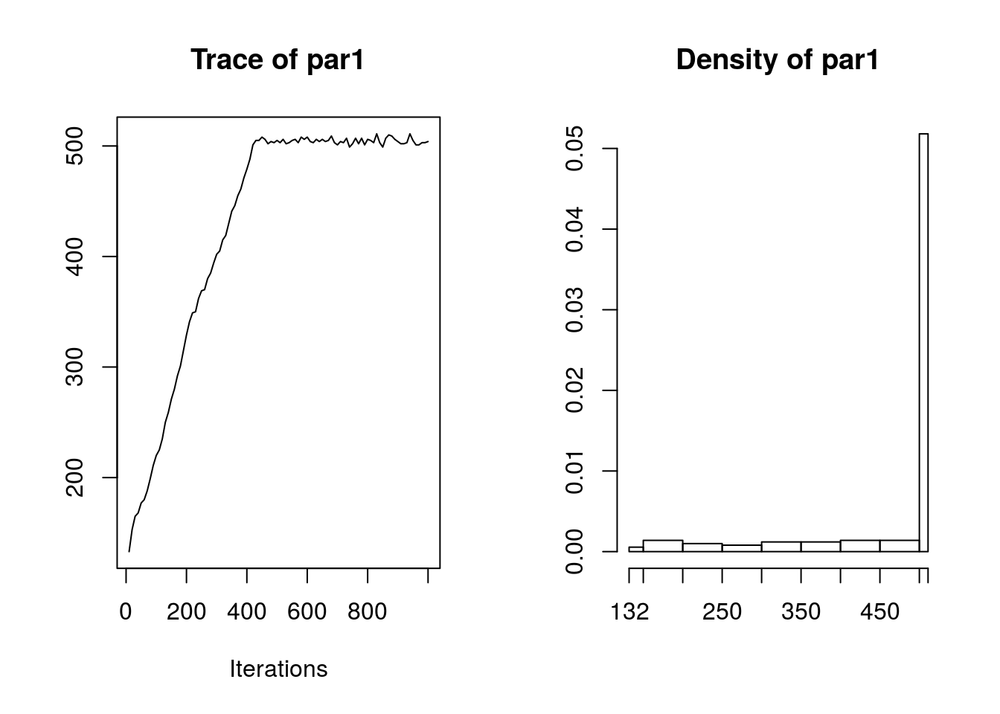
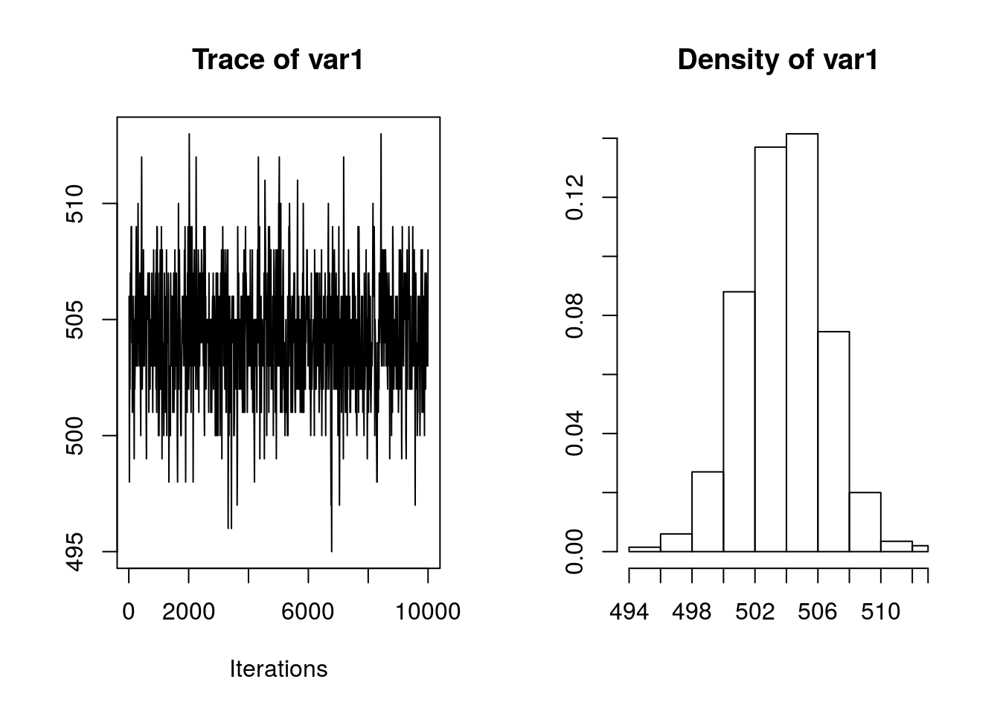

vignettes/integer-kernel.Rmd
integer-kernel.RmdOne of the biggest benefits of the fcmc package is the fact that it allows you creating personalized kernel functions. fmcmc_kernel objects are created with the kernel_new function (a function factory), and require (at least) one parameter, the proposal function. In what follows, we show an example where the user specifies a transition kernel used to estimate an integer parameter, the n parameter from a binomial distribution.
For this example, imagine that we are interested on learning what is the size of a population given that we already now the prevalence of a particular phenomena, for example, a disease. Furthermore, assume that 20% of the population acquire this disease, and we have a random sample from this population \(y \sim \mbox{Binom}(0.2, N)\). We don’t know \(N\).
Such scenario, while perhaps a bit uncommon, needs a special treatment in a bayesian/MCMC framework. The parameter to estimate is not continuous so we would like to draw samples from a discrete distribution. Using the “normal” (pun intended) transition kernel may still be able to estimate something, but does not provide us with the correct posterior distribution. In this case, a transition kernel that makes discrete proposals would be desired.
Let’s simulate some data, say, 300 observations from this Binomial random variable with parameters \(p = .2\) and \(N = 500\):
library(fmcmc)
set.seed(1) # Always set the seed!!!!
# Population parameters
p <- .2
N <- 500
y <- rbinom(300, size = N, prob = p)Our goal is to be able to estimate the parameter \(N\). As in any MCMC function, we need to define the log-likelihood function:
Now comes the kernel object. In order to create an fmcmc_kernel, we can use the helper function kernel_new as follows:
kernel_unif_int <- kernel_new(
proposal = function(env) env$theta0 + sample(-3:3, 1),
logratio = function(env) env$f1 - env$f0 # We could have skipped this
)Here, the kernel is in the form of \(\theta_1 = \theta_0 + R, R\sim \mbox{U}\{-3, ..., 3\}\), this is, proposals are done by adding a number \(R\) drawn from a discrete uniform distribution with values between -3 and 3. While in this example we could have skipped the logratio function (as this transition kernel is symmetric), but we defined it so that the user can see an example of it.1 Let’s take a look at the object:
kernel_unif_int
#>
#> An object of class fmcmc_kernel. The following two functions are available:
#>
#> logratio : function (env)
#> proposal : function (env)The object itself is actually an R environment. If we added more parameters to kernel_new, we would have seen those as well. Now that we have our transition kernel, let’s give it a first try and see what can we get with this new kernel_unif_int object we just created with the MCMC function.
ans <- MCMC(
ll, # The log-likleihood function
initial = max(y), # A fair initial guess
kernel = kernel_unif_int, # Our new kernel function
nsteps = 1000, # 1,000 MCMC draws
thin = 10, # We will sample every 10
p. = p # Passing extra parameters to be used by `ll`.
)Notice that for the inital guess we are using the max of y, which is a reasonable starting point (the \(N\) parameter MUST be at least the max of y). Since the returning object is an object of class mcmc from the coda R package, we can use any method available for it. Let’s starty by plotting the chain:

As you can see, the trace pf the parameter started to go up right away and then stayed around 500, the actual population parameter \(N\). As the first part of the chain is useless (we are essentially moving away from the starting point), it is wise (if not necessary) to start the MCMC chain from the last point of ans. We can easily do so by just passing ans as an starting point, since MCMC will automatically take the last value of the chain as starting point of this new one. This time, let’s increase the sample size as well:
ans <- MCMC(
ll,
initial = ans, # MCMC will use tail(ans, 0) automatically
kernel = kernel_unif_int, # same as before
nsteps = 10000, # More steps this time
thin = 10, # same as before
p. = p # same as before
)Let’s take a look at the posterior distribution:

summary(ans)
#>
#> Iterations = 10:10000
#> Thinning interval = 10
#> Number of chains = 1
#> Sample size per chain = 1000
#>
#> 1. Empirical mean and standard deviation for each variable,
#> plus standard error of the mean:
#>
#> Mean SD Naive SE Time-series SE
#> 504.32400 2.62219 0.08292 0.09073
#>
#> 2. Quantiles for each variable:
#>
#> 2.5% 25% 50% 75% 97.5%
#> 499 503 504 506 509
table(ans)
#> ans
#> 495 496 497 498 499 500 501 502 503 504 505 506 507 508 509 510 511 512
#> 1 2 4 8 13 41 71 105 127 147 148 135 91 58 31 9 2 5
#> 513
#> 2A very nice mixing (at least visually) and a posterior distribution from which we can safetly sample parameters.
For more details on what the env object contains, see the manual page of kernel_new.↩